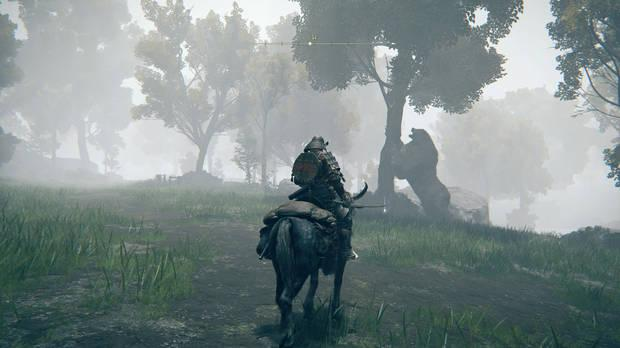
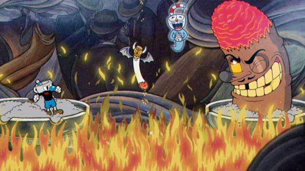

Nuevos anuncios de Rockstar
La compañía Rockstar ha anunciado que GTA VI no sufrirá más retrasos y aseguran que mantienen la fecha esperada.
Esta es una página básica sobre videojuegos donde hablaré de noticias, reseñas y compartiré algunas imágenes.
La compañía Rockstar ha anunciado que GTA VI no sufrirá más retrasos y aseguran que mantienen la fecha esperada.
En esta sección se destacan las clasificaciones finales y los resultados de los partidos de los Playoffs de Verano LEC 2025. Aunque el juego en sí es extremadamente interesante de ver, el resultado del torneo aumenta la importancia de cada partido. Los 8 mejores equipos avanzan al Campeonato Mundial de League of Legends 2025 (LoL Worlds 2025).
Un mundo de infinitos secretos. - Vandal
Analisis CompletoEl encanto de los añorados años 30. - Vandal
Analisis Completo
